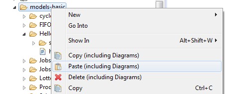

When reorganizing files and folders (copy, paste, delete or rename), the graphical diagrams belonging to the POOSL models also need to be updated. This page explains how to do this.
The context menu of the project explorer contains specific actions for copying POOSL models (including their diagrams).

Afterwards the paste action for POOSL models (including their diagrams) becomes available.
These actions can be applied to both files and folders. For each diagram, all styles and positions are copied.
The context menu of the project explorer contains specific actions for deleting POOSL models (including their diagrams).

When renaming a file or folder (e.g., by pressing <F2>) from within Eclipse, the diagrams are automatically updated. Note: Eclipse updates the label of graphical editors only after reopening the editor.
It is possible to inspect the representations.aird file and view all the diagrams inside, but you should avoid the option as much as possible. To open the representations.aird file in the project explorer follow the instructions below.